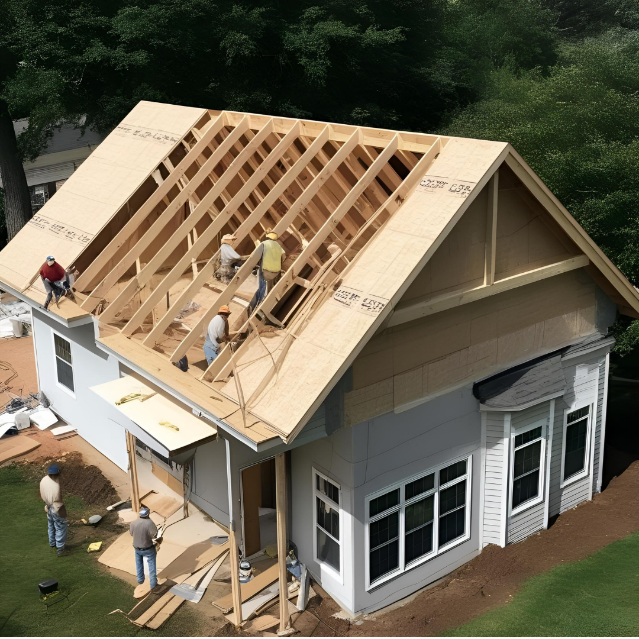

Atividades
Nesta seção, você encontrará propostas de atividades de Modelagem Matemática integradas à Educação STEAM, elaboradas a partir de situações contextualizadas e pensadas para o desenvolvimento de práticas investigativas no Ensino Médio. As atividades podem ser adaptadas conforme a realidade da turma, os objetivos pedagógicos e as trilhas de aprendizagem envolvidas.

Reutilizando: uma ideia para o uso de caixas d’água na agricultura urbana
Proposta investigativa voltada ao reaproveitamento de uma caixa d’água para plantio, envolvendo planejamento, cultivo, manutenção e discussão sobre sustentabilidade.
Acessar atividade
Organizando o laboratório de informática
Atividade que propõe a investigação de formas de reorganizar o laboratório escolar, considerando circulação, conforto e melhor aproveitamento do espaço.
Acessar atividade
Construindo um telhado
Proposta que mobiliza discussões sobre cobertura, custo, escolha de materiais e eficiência energética a partir do planejamento de um telhado para uma edificação.
Acessar atividadeParada Segura
Atividade inspirada no funcionamento de veículos autônomos, envolvendo sensor ultrassônico, distância de segurança e investigação de situações relacionadas à desaceleração.
Acessar atividadeAs propostas apresentadas neste espaço não constituem um roteiro fechado, mas possibilidades de trabalho que podem ser adaptadas de acordo com o contexto escolar e as escolhas pedagógicas de cada professor.